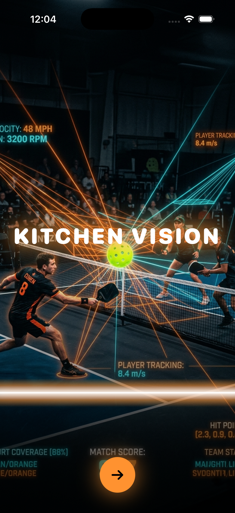
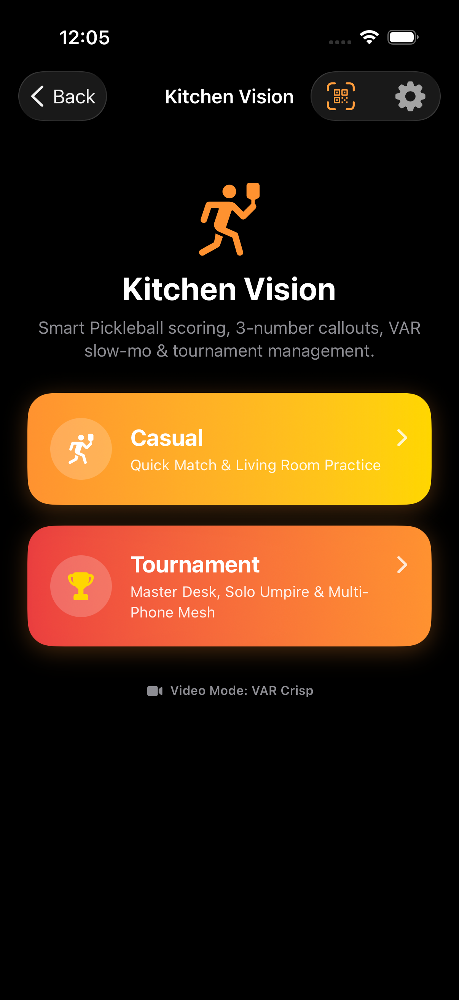
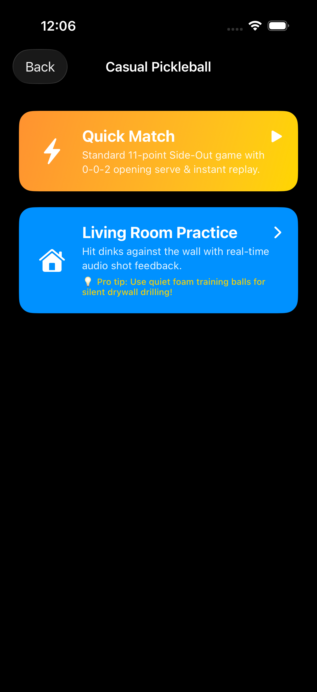
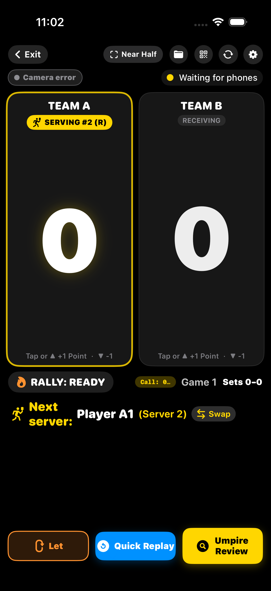
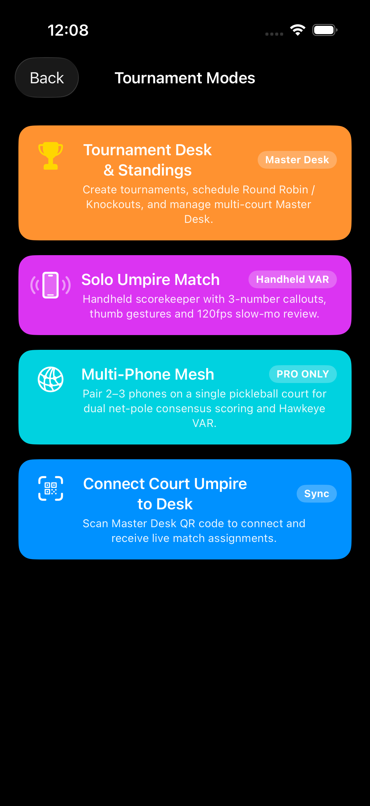
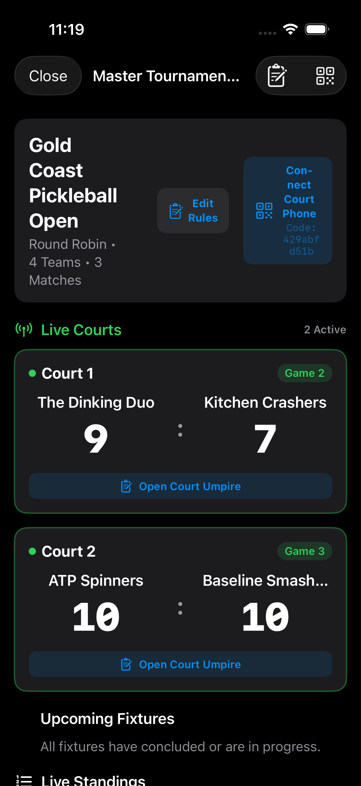
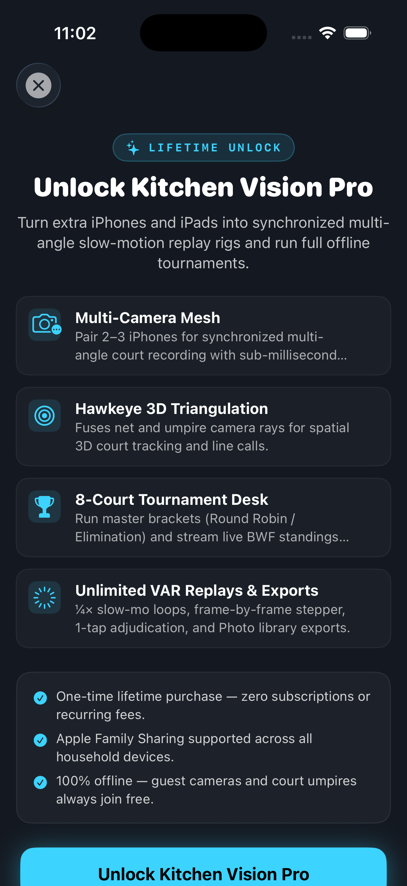

Kitchen Vision
Officiate, score, and replay pickleball like a pro. Handles the 0-0-2 opening serve, side-out server rotations, 3-number callouts, VAR slow-mo replay, and tournament desks — 100% offline on the iPhones and iPads you already own.
In-App Experience
High-contrast Dark Mode design built for outdoor sunshine courts and indoor club lighting alike.







The 0-0-2 Side-Out Rule Kept For You
Pickleball doubles begins with only one server ("0-0-2"), rotates through Server 1 and Server 2 on subsequent side-outs, and requires server score parity matching the right/left courts. Kitchen Vision calculates the exact 3-number callout on every point so arguments never stall the match.
Handheld Solo Umpire & Instant Slow-Mo
Run the entire game with simple single-thumb tap and swipe gestures. When a kitchen fault or baseline line-call is disputed, open instant ¼× slow-motion review from local rolling memory with frame-stepping before committing the call.
Multi-Phone Net-Post Synchronization
Pair 2 to 3 iPhones peer-to-peer with no Wi-Fi router. The devices achieve sub-millisecond hardware clock synchronization, recording synchronized multi-angle video with Hawkeye 3D ray tracing.
Multi-Court Live Standings Master Desk
Organize club round robins and elimination brackets on an iPad Master Desk. Court umpires connect instantly by scanning a QR code, streaming real-time live scores and match completions to the central desk.